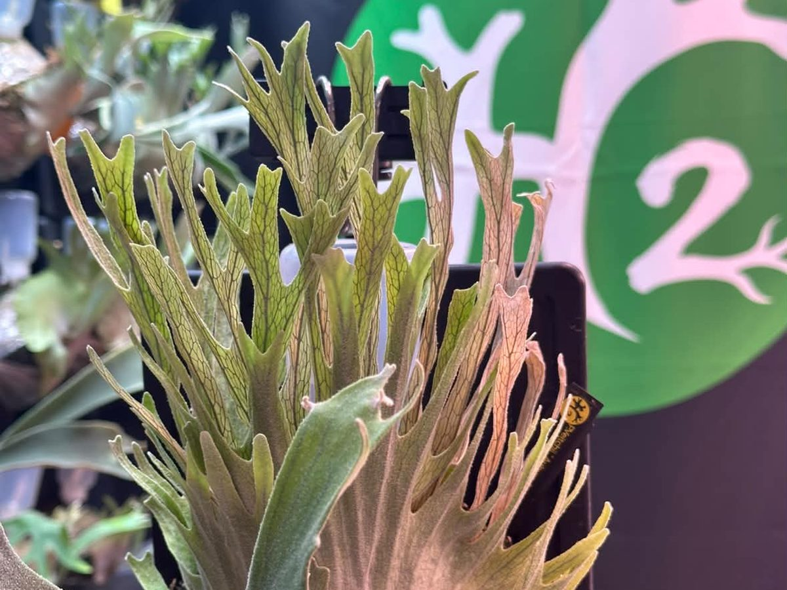
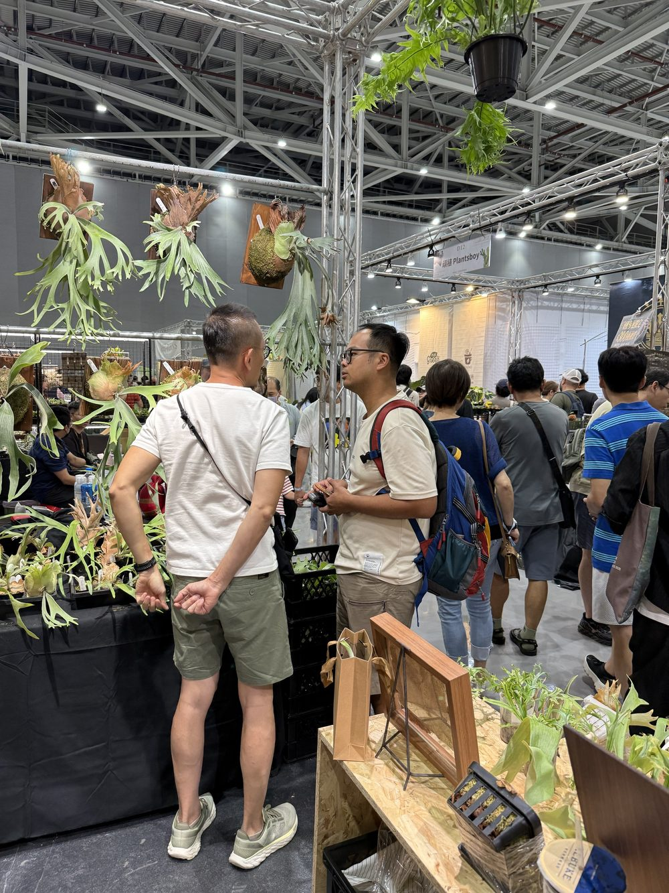
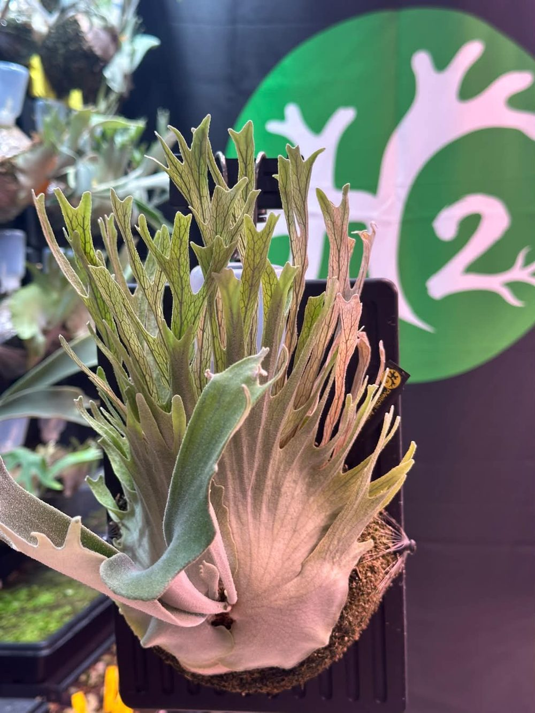
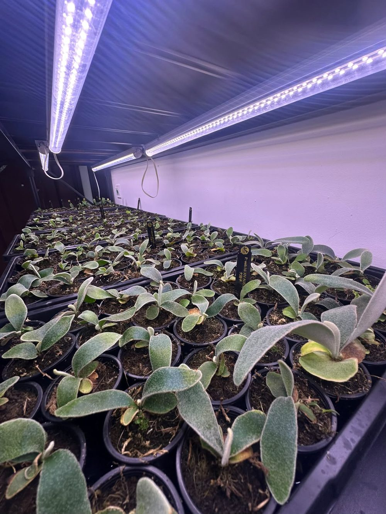
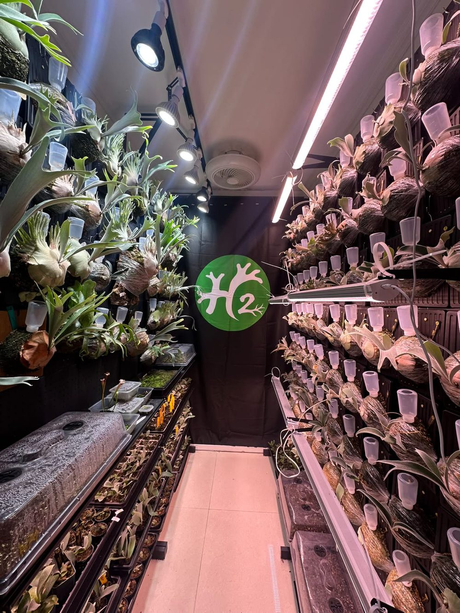

從一棵 HFG 開始，認識一位執著於澳銀型態的玩家。

我們是在台灣的艸質感認識小黑的。

當時，他在直播中介紹到我們的 Platycerium veitchii HFG（王姿婷）個體。這棵植物的尺寸不大，手指與冠型卻相當出色，讓他特別駐足。經過詢問，我才知道他來自澳門，而澳銀（P. veitchii）正是他最喜歡、也最專注的鹿角蕨類型。
小黑同時也是 H2 ferns 的主理人，與夥伴阿海一起經營。阿海我還沒有機會見過，之後如果有機會，也很想認識。
對小黑而言，澳銀的魅力不只是銀白的葉面，更在於尖刺的表現、手指的分叉，以及營養葉與孢子葉所呈現的各種型態差異。
一棵植物即使尺寸不大，只要具備足夠鮮明的特徵，就可能比體型更大的個體更有吸引力。這也是收藏鹿角蕨有趣的地方：真正吸引玩家的，往往不是單一的尺寸或數量，而是那些值得反覆觀察的細節。
談到自己對澳銀的追求，小黑提到，現階段玩家對澳銀的審美，已經不只是銀白色葉片或整體株型的比較，而是逐漸深入到孢子葉與營養葉的細節。
在孢子葉方面，他特別重視分叉的表現。
分叉是否具有特色、形態是否獨特，以及能否呈現出少見的結構，都是他挑選個體時的重要考量。對他來說，追求的不只是漂亮，而是希望找到具有辨識度、甚至能夠展現「人無我有」特質的個體。

相較之下，營養葉的追求則更加細膩。
除了整體冠型，營養葉的分叉層次、尖刺的密度與排列，也是他關注的重點。一級分叉、二級分叉所形成的細密尖刺，能讓葉片呈現更豐富的結構；如果葉片同時帶有飄逸的姿態，更能增加整體的觀賞性。
近年他也觀察到，玩家對營養葉下半部出現尖刺的型態特別感興趣。這類特徵在玩家之間有不同的俗稱，例如「胡子臉」、「大胡」、「半胡」與「小胡子」等。
這些名稱反映了玩家對特定型態的辨識與交流，也說明鹿角蕨的收藏文化，早已發展出一套細緻的審美語言。
當大家對一個品種的認識越來越深入，收藏的標準也會逐漸從整體外觀，延伸到更細微的形態差異。
而這正是小黑投入澳銀的原因：在一個大家都熟悉的品種裡，持續尋找還沒有被自己看見的可能性。
如果說成株的型態是收藏的目標，那麼孢子苗的培育，就是這場追尋的起點。
小黑分享，他在養護澳銀孢子苗杯苗時，偏向採用薄肥勤施的方式。一般情況下，每月施肥兩次，並讓培育環境維持在半乾半濕的狀態，光照則約為 5,000～6,000 lux。

在型態觀察方面，當幼苗長出真葉，並逐漸進入可以上杯的階段時，他便會進行第一次挑選。
挑選時，他特別留意幾種表現：
這些標準並不是單純依照幼苗的大小或生長速度來挑選，而是將觀察重點放在型態本身。
不過，幼苗階段所呈現的特徵，並不一定代表成株後的最終表現。對孢子苗玩家而言，早期觀察、持續培育與後續篩選，都是認識一棵植物的過程。
小黑也特別提到，澳銀的型態與母本基因有密切關係，而養護環境同樣重要。當幼苗尚未展現出足夠明確的特徵時，即使是賣家，也未必能準確預測它長大後會呈現什麼樣的面貌。
這也讓澳銀孢子苗的培育多了一層不確定性：玩家可以透過選拔提高找到特殊型態的機會，卻不能僅憑幼苗當下的外觀，就保證它未來一定會長成理想中的樣子。
對小黑而言，這份不確定性，正是持續觀察與培育的樂趣之一。
在鹿角蕨的收藏過程中，找到一棵符合自己審美的植物，有時候並不容易。

尤其當目標不是一般常見的型態，而是具有特殊分叉、細密尖刺或獨特冠型的澳銀時，尋找的過程往往需要更多耐心。
小黑認為，少見型態的形成與母本基因有關，後續養護環境也會影響植物的生長表現。因此，想要找到理想的個體，不能只看眼前的外觀，還需要理解它的來源與生長過程。
這也是為什麼他願意花時間尋找種源，從不同線索中追溯個體的背景。
對一般買家而言，購買植物可能是選擇一棵當下喜歡的成株；但對專注於型態的玩家而言，真正重要的問題還包括：這棵植物的特徵是否具有吸引力？它的來源是否值得信賴？未來的培育又有多少值得期待的地方？
當然，這不代表每一棵小苗都能長成理想中的型態，也不代表少見就必然具有更高價值。對玩家來說，收藏的意義往往在於找到自己真正欣賞的特徵，並願意為此持續投入。
而小黑對澳銀的執著，正體現在這些選擇之中。
雖然澳銀是小黑最初著迷的類型，但他的興趣並不只停留在這裡。
近年他也開始持續學習與研究侏儒型鹿角蕨，其中包括侏黃、OMG 與 Monster Moon 等類型，都是他喜歡的方向。
相較於澳銀以尖刺、分叉與葉片結構吸引玩家，侏儒型鹿角蕨則有另一種觀賞魅力。不同類型在株型、葉片比例與整體姿態上的差異，也讓收藏的樂趣不再侷限於單一品種。
從最初被澳銀吸引，到開始探索其他鹿角蕨的型態，小黑的收藏方向也在持續拓展。
不過，澳銀仍然是我們最常交流的主題。從孢子苗的養護、幼苗的挑選，到不同型態的辨識，我們經常分享彼此的觀察與經驗。
對我而言，這類交流最有價值的地方，在於大家不只是分享自己買到了什麼，更會討論為什麼喜歡某種型態，以及如何在培育過程中觀察植物的變化。
當交流從單純的植物交換，延伸到對生長與型態的理解，彼此就有了更多可以深入討論的內容。
澳門的鹿角蕨玩家相對稀疏，當地不少鹿角蕨以室內裝飾為主要用途。對於希望深入收藏特定型態的玩家而言，可選擇的植物與交流資源相對有限。
因此，小黑取得植物的管道，經常延伸到台灣、泰國與中國大陸等地。
這也讓我們有機會聊到不同地區的鹿角蕨市場，以及各地玩家的收藏方向。
除了泰國、日本等既有的植物來源與市場之外，中國大陸也發展出許多值得關注的個體。有些個體在台灣並不常見，甚至連我都未曾聽聞；反過來說，台灣著名或流行的個體，在其他市場也可能早已受到廣泛討論，並持續流通。
這讓我想起中國大陸鹿角蕨市場剛開始發展的時候。當時觀看泰國商家的直播，經常聽到整床植物被大陸貿易商一次包下、隨即售罄的情況。
從當時的印象到現在的交流經驗，我逐漸意識到，不同地區的鹿角蕨市場，都可能累積出自己獨特的種源、收藏方向與玩家社群。只是這些資訊未必能夠完全流通，而我們熟悉的市場，也不一定涵蓋了整個鹿角蕨世界。
透過小黑，我得以看見自己原本不熟悉的那一面。
他身處澳門，卻持續往不同地區尋找植物資源；而對我而言，這樣的交流也讓原本分散在不同市場的資訊，有機會透過玩家之間的分享重新連結。
認識小黑之後，我更清楚地感受到，鹿角蕨的世界遠比單一市場所呈現的更加廣闊。
每個玩家都有自己著迷的方向。有些人追求品種的稀有性，有些人著重成株的表現，也有人願意花上數年時間，從孢子苗開始觀察與培育。
小黑選擇從澳銀出發，專注於自己喜歡的型態，持續尋找少見個體，也在這個過程中拓展自己的收藏與研究方向。
而我想記錄這些植友的原因，並不只是為了留下交易或合作的紀錄。
對我來說，真正有意義的植物交流，是透過一棵植物認識另一個人，再透過這個人，理解自己原本不熟悉的市場、經驗與觀點。
植物讓我們相遇，而真正讓交流持續下去的，是彼此對植物的理解、投入與熱情。
未來，我也希望透過這些人物紀錄，讓更多不同地區的鹿角蕨玩家有機會被認識，讓原本分散在各地的收藏者與培育者，逐漸建立起更廣泛的交流網絡。